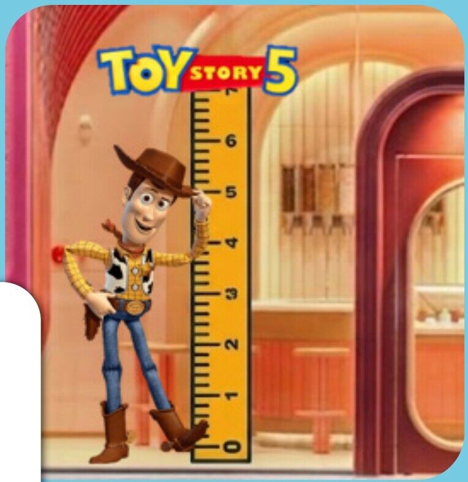
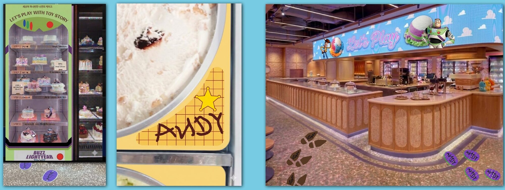

Woody’s Sky Adventure
An imperfect leader and a retro cowboy: nostalgia for people in their 30s and 40s, newtro charm for Gen Alpha. Pink, sky blue and orange, with red jelly pops.완벽하지 않은 리더, 레트로 카우보이. 3040에겐 향수, 알파세대에겐 뉴트로. 핑크·하늘·오렌지에 빨간 젤리 팝.
Baskin-Robbins Korea × Disney·Pixar
Campaign plan · June 2026캠페인 기획안 · 2026년 6월
Toy Story 5 × Baskin-Robbins. How we planned to turn a film about old toys versus new tech into a month of things you can actually play with.토이 스토리 5 × 배스킨라빈스. ‘옛 장난감 vs 최신 기기’ 이야기를, 손으로 직접 갖고 노는 한 달로 바꾸는 기획.
The brief배경
The insight인사이트
Toy Story 5 brings in Lilypad, a frog-shaped tablet that learns, stays connected and never gets tired. It is a villain every parent will recognise. Our answer was the oldest idea in the films: play is something you do with your hands, together.토이 스토리 5의 새 캐릭터 릴리패드는 스스로 배우고 늘 연결되어 있는 개구리 태블릿. 모든 부모가 알아보는 ‘현실 고증 빌런’입니다. 우리의 답은 시리즈의 가장 오래된 생각이었습니다. 놀이는 손으로, 함께 하는 것.
“Don’t just watch it.
Let’s play.”“보기만 하지 말고,
같이 놀자.”
Characters → flavours캐릭터 → 플레이버

An imperfect leader and a retro cowboy: nostalgia for people in their 30s and 40s, newtro charm for Gen Alpha. Pink, sky blue and orange, with red jelly pops.완벽하지 않은 리더, 레트로 카우보이. 3040에겐 향수, 알파세대에겐 뉴트로. 핑크·하늘·오렌지에 빨간 젤리 팝.
A space ranger who is funnier than he knows, and a toy full of buttons. Purple and green swirls on white: the suit, as a scoop.본인만 모르는 코믹함의 우주 전사, 버튼 가득한 기능성 장난감. 화이트 위 퍼플·그린 스월로 수트를 그대로.

The world테마
Disney gave us two background artworks from the new film. We kept the characters mid-run, with Lilypad waving ‘Hi!’, so every poster feels like the second before a game starts.디즈니가 제공한 신작 배경 아트워크 2종. 캐릭터들은 달려가는 순간에 두고, 릴리패드는 ‘Hi!’ 하고 인사하게. 모든 포스터가 놀이가 시작되기 직전처럼 보이도록.


Touchpoints패키지


Goods play굿즈


The signature시그니처
In the films, Andy writes his name under Woody’s boot and Buzz’s foot. We borrowed the gesture: put your own name on your cup, and follow Andy’s footprints through the store.영화 속 앤디는 우디의 부츠와 버즈의 발바닥에 자기 이름을 씁니다. 그 몸짓을 빌렸습니다. 내 컵에 내 이름표를 붙이고, 매장 바닥의 앤디 발자국을 따라 걷기.



June, all at once6월 IMC
Toy Story is © Disney/Pixar. Shown as client work for Baskin-Robbins Korea, from the March 2026 campaign plan; items still to be decided in the plan may differ from what launched. Some visuals were cleaned up, animated or extended with generative tools (Higgsfield) for this page.토이 스토리 © Disney/Pixar. 배스킨라빈스 코리아 클라이언트 작업으로, 2026년 3월 캠페인 기획안에서 발췌했습니다. 기획 단계의 미확정 항목은 실제 출시와 다를 수 있습니다. 일부 이미지는 이 페이지를 위해 생성형 도구(Higgsfield)로 정리·애니메이션·확장했습니다.